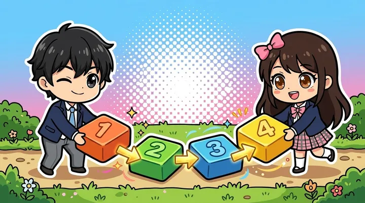
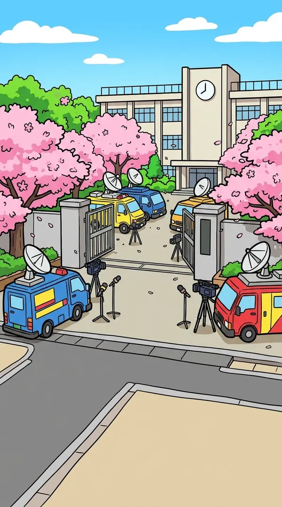
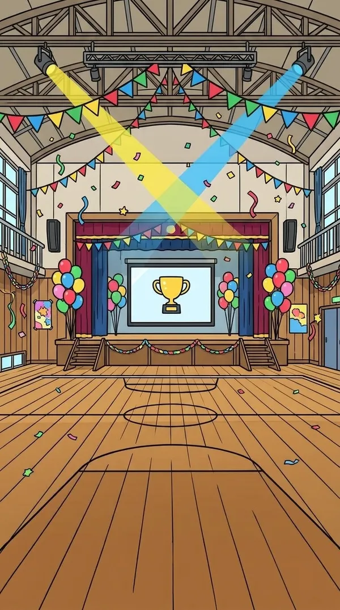
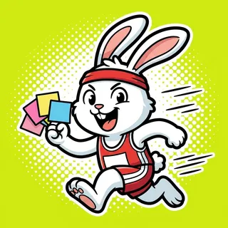

用語・瞬発力
スピードクイズ
60秒で何問解けるか。コンボでスコアが伸びる
2027年版令和8年度の過去問まで収録
人類で初めてしゃべった猫・ニャンが、国家試験に挑戦!?過去問2,000問以上、本番形式の模擬試験、シラバス順の教本、全8章のストーリー、キャラのミニゲーム。勉強に必要なものは無料で、「もう1問」が止まらないITパスポートの勉強アプリです。

Play now
にゃんパスに入っている8種類のミニゲームのひとつ「スピードクイズ」を、ブラウザでそのまま遊べます。ニャンが出す意味に合う用語を、4つからすばやく選ぼう！
スピードクイズ
ニャンがIT用語の意味を出すよ。その意味に合う用語を、4つの中からタップ！30秒で何問正解できるかな？続けて正解するとコンボで点数アップ。
体験版：基本の用語54語から出題
この意味の用語はどれ？
Why NyanPass
問題数と解説は大手のアプリに負けない量を無料で。そのうえで、続けたくなるゲームと物語をのせました。
| よくある問題集アプリ | にゃんパス | |
|---|---|---|
| 問題 | 過去問を解くだけ | IPAの公開過去問2,000問以上（図の問題も）＋用語のステージ |
| 解説 | 短い正解だけのことも | 全問にオリジナルの解説。まちがいの選択肢がなぜちがうかも |
| 今の 制度 | 古い法律の問題がそのまま | 2026年11月時点の法律・制度に合わない問題は除外 |
| 実力の 確認 | 正答率だけ | 100問・120分の模擬試験。分野別の点数と合格ラインを判定 |
| 続ける 理由 | 連続記録だけ | ストーリー・キャラワールド・トレカ・着せ替え・毎日のミッション |
| 料金 | 月額のサブスクが多い | 勉強に必要なものは無料。広告なしは買い切り（定期購入なし） |
Past questions
2027年版平成25年度〜令和8年度
平成25年度から令和8年度まで、21回分のIPA公開問題を収録。新しい年度の公開問題は、毎年のアップデートで追加します。年度別でも分野別でも解けて、答えるとすぐに解説が出ます。図やグラフの問題は、原本の図をタップで拡大して見られます。
注：過去問はIPA（独立行政法人情報処理推進機構）の公開問題です。本アプリはIPAとは関係ありません。
令和8年度 問1
答えを選ぶと、正解とオリジナルの解説、出典が表示されます。
Mock exam
100問・120分、ストラテジ系35問・マネジメント系20問・テクノロジ系45問。1,000点満点で、総合600点以上・各分野300点以上の合格ラインに届いたかを判定します。25問のミニ模試と、分野ごとの20問テストも。
注：合格の目安は本アプリ独自のものです。本番の採点方法とは異なる場合があります。
Learn & play
3分野の用語を10問ずつのステージで。6割正解で合格、全問正解でパーフェクト。苦手な用語は自動で復習に。
シラバス順の全24課。損益分岐点・稼働率・2進数などの計算も、例つきでやさしく。各課にミニクイズ。
818語を用語・読み・意味で検索。苦手な用語だけの表示もできます。
21のワールドで、意味あて・略語の正式名・どの分野？・○×・仲間はずれ・計算のプチゲームを次々に。
ゲームでためたコインでトレカガチャ（コインはお金では買えません）。ユナ・テヒョン・ニャンの衣装は全36着。
Mini games
ゲームごとに鍛えられる力がちがいます。どれもレベル1〜5とエンドレスの6段階で、★を集めると次のレベルと衣装が開きます。スコアはGame Center のランキングで競えます。
用語・瞬発力
60秒で何問解けるか。コンボでスコアが伸びる
用語・記憶
用語と意味のカードをペアに
計算
2進数・稼働率・損益分岐点を時間内にどんどん
略語
正式名を見て、略語の風船を割ろう
3分野
落ちてくる用語を、ストラテジ・マネジメント・テクノロジにしわけ
過去問
本物の過去問にライフ制で挑戦。解説つき
セキュリティ
あやしいメールやURLはブロック、安全ならOK

手順
開発工程・PDCA・インシデント対応を正しい順番に
Story
しゃべる猫ニャンは世界中のニュースに。でも「どうせ芸だろう」と言われて、国家試験で証明すると宣言！ユナ・留学生のテヒョンと、生徒会長から廃部を言い渡されたパソコン部を立て直します。文化祭の模擬店の売上計算、著作権のトラブル、学校のサイトの乗っ取り事件…。章ごとに、その分野の用語の課題があります。
登場するキャラクターはすべて架空です。経営戦略の生徒会長、ガントチャートの委員長、データベースの図書委員など、名前と役どころで用語を覚えられる21人。



Price
過去問・解説・用語集・コース・教本・ストーリー・ゲームのレベル1〜3は無料で使えます（無料版は広告あり）。プレミアムは1回払いの買い切りで、定期購入ではありません。
980円610円 買い切り
FAQ
大丈夫です。コースの「はじめの一歩」と、教本の「はじめに」から始めてください。
正解はIPAが公表している解答例のとおりです。書き起こしと解説は、別の担当が全問をもう一度確認しています。
はい。iCloud で記録が同期されるので、iPhone とiPad のどちらでも続きから使えます。
いいえ。模擬試験の合格ラインは本アプリ独自の目安です。試験の最新情報はITパスポート試験の公式サイトで確認してください。
ほかのご質問は サポートページ へ。